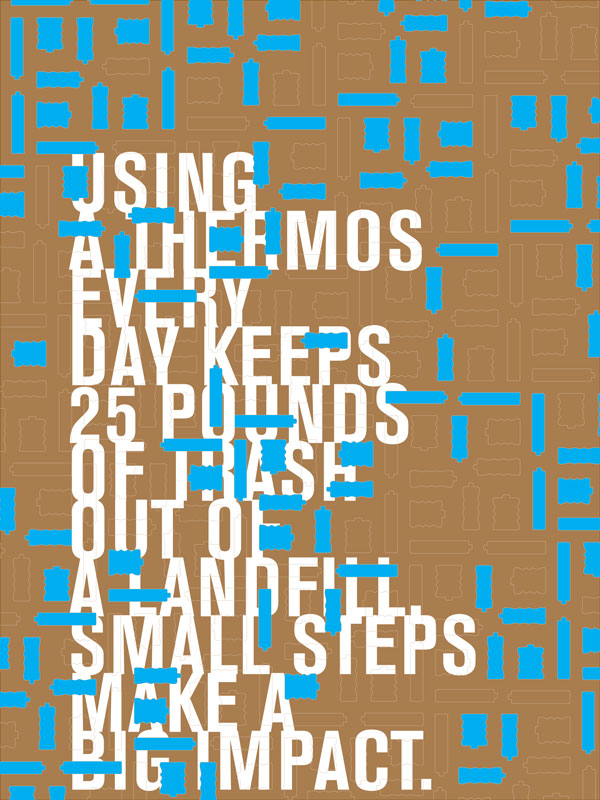

about
abstract
blog
etc
category
Posters
Songs of Experience
Multiplicity Type Studies
A Map of Desks

Small Steps Posters
Bernd & Hilla Becher
Sunrise, Sunset
front matter
abstract
it started here
expository essay
bibliography
references
closing remarks
chron-
ology
spring 2009
winter 2009
fall 2008
spring 2008
winter 2008
fall 2007
spring 2007
media
Books
Collaborations
Concrete
Experience
Photography
Posters
Teaching
Web Sites
Writing